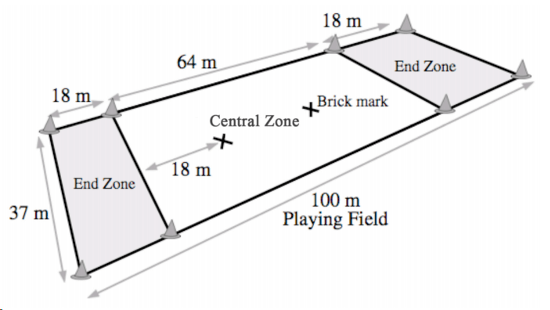

Ultimate Frisbee
Was ist Ultimate Frisbee?
Geschichte

Walter Frederick Morrison, der das ganze beobachtete und als Kind selbst bei der Frisbie Pie Company diese runden Kuchen kaufte, liess sich dazu inspirieren, diese Kuchenbleche, die als Flugscheiben benutzt wurden, flugtauglicher zu machen. 1949 fertigte er die erste Kunststoffscheibe an, woraus sich dann 1951 seine zweite Scheibe entwickelte. Wegen der dazumal gross herrschenden Faszination an UFO’s nannte Morrison das Modell «Pluto-Platte». Das Modell hatte einst schon grosse Ähnlichkeiten mit der heutigen Frisbee Scheibe. Ab 1957 wurden diese dann vom amerikanischen Spielzeugunternehmen «Wham-O» hergestellt und verkauft. Erst 1959 wurden die fliegenden Scheiben mit dem Handelsnamen «Frisbee» eingetragen und verkauft.
Wie funktioniert Ultimate Frisbee?

Ultimate Frisbee gilt als einzige selbstregulierende Teamsport der Welt, das heisst dass bei dieser Sportart kein Schiedsrichter existiert, sondern die Spieler*innen sich selbst verwalten. Geschieht also während eines Spiels ein Foul, so ruft die gefoulte Person «foul» und der Spielfluss wird eingefroren, aller Spieler*innen müssen stehenbleiben. Wenn der/die unmittelbar beteiligte/r Gegenspieler*in das Foul anerkennt, behält der/die gefoulte Spieler*in die Scheibe. Bestreitet sein/ihre Gegenspieler*in ein Foulspiel («Contest»), so geht die Scheibe wieder zum/zur Werfer*in zurück und das Spiel geht von dort weiter. Auch Spielsituationen wie «Aus» oder «Travel» werden unter den Spieler *innen diskutiert und ausgehandelt. Dieses Prinzip fördert die Fairness und funktioniert nur durch Gegenseitigkeit. Für diese Selbstregulierung wird deshalb von jedem einzelnen Spieler und jeder einzelnen Spielerin, eine gute Regelkenntnis und viel Vertrauen und Respekt erwartet. Nach jedem Spiel die beiden Teams im gemeinsamen Kreis auf, besprechen wie das Spiel gelaufen ist und wie der Spirit dabei war. Direktes Feedback ist ein wichtiger Aspekt bei der Aufrechterhaltung des Spirit of the Game. Innerhalb des Teams wird später noch ein Sheet für die gegnerischen Mannschaften ausgefüllt, wieviel Punkte sie in Bezug auf den Spirit of the Game erzielt haben. Am Ende werden die Punkte zusammengezählt und die Mannschaft mit den meisten Punkten wird honoriert.
{kind=link}
Spielregeln
Die 10 wichtigsten Spielregeln kurz und knapp:
1. Spirit of the Game
Ultimate ist ein kontaktfreier Sport ohne externe Schiedsrichter. Alle Spieler sind dafür ver- antwortlich, die Regeln zu befolgen und deren Einhaltung zu überwachen. Ultimate beruht auf dem Spirit of the Game, der die Verantwortung des Fair Plays jedem Spieler überträgt. Es wird darauf vertraut, dass kein Spieler absichtlich die Regeln verletzt; infolgedessen gibt es auch keine harten Strafen für versehentliche Regelverstöße, sondern vielmehr eine Methode zur Spielfortsetzung in einer Art, die simuliert was höchstwahrscheinlich passiert wäre, hätte es keinen Regelverstoß gegeben. Hoher kämpferischer Einsatz wird gefördert, sollte aber niemals auf Kosten des gegenseitigen Respekts zwischen den Spielern, des Festhaltens an den vereinbarten Spielregeln oder der Freude am Spiel gehen.
2. Punkt, Punktgewinn und Partie
Eine Partie besteht aus einer Anzahl von Punkten. Jeder Punkt endet mit dem Erzielen eines Punktgewinns. Die Partie wird beendet und ist gewonnen von der Mannschaft, die als erstes fünfzehn (15) Punktgewinne erzielt. Eine Partie ist in zwei (2) Spielabschnitte getrennt, die Spielhälften genannt werden. Halbzeit ist, wenn eine Mannschaft als erstes acht (8) Punktgewinne erzielt.
3. Eine Partie beginnen
Vertreter der zwei Mannschaften bestimmen in fairer Weise, welche Mannschaft zuerst auswählt, ob sie den ersten Anwurf empfängt oder wirft; oder welche Endzone sie anfangs verteidigen wird.
4. Der Anwurf
Zu Beginn der Partie, nach der Halbzeit oder nach einem Punktgewinn, beginnt das Spiel mit einem Anwurf. Der Anwurf darf erst ausgeführt werden, nachdem beide Mannschaften ihre Bereitschaft signalisiert haben, indem der Anwerfende und ein Spieler der Offense eine Hand über ihren Kopf heben. Nach dem Bereitschaftssignal müssen alle Angreifer und Verteidiger mit einem Fuß auf der von ihnen verteidigten Punktlinie stehen, ohne dabei ihren relativen Ort zueinander zu verändern, bis der Anwurf losgelassen wird. Sobald die Scheibe abgeworfen wurde, dürfen sich alle Spieler*innen jede Richtung bewegen. Kein Spieler aus der verteidigenden Mannschaft darf die Scheibe nach dem Anwurf berühren, bis ein Mitglied der angreifenden Mannschaft die Scheibe berührt oder die Scheibe den Boden berührt.
5. Anzählen
Der Marker (Difence) kann den Werfer (Offence) anzählen, indem er zuerst „Stalling“ oder „Zähle“ sagt und dann von eins (1) bis zehn (10) zählt. Der Abstand zwischen dem Anfang jeder Zahl beim Anzählen muss mindestens eine (1) Sekunde betragen. Das Anzählen muss für den Werfer deutlich hörbar sein. Falls der Marker sich mehr als drei (3) Meter vom Werfer entfernt oder ein anderer Spieler zum Marker wird, muss das Anzählen bei „Stalling one (1)“ bzw. „Zähle eins (1)“ neu begonnen werden.
6. Der Check
Immer wenn das Spiel während eines Punktes für ein Time-Out, ein Foul, eine Violation, einen bestrittenen Turnover, einen bestrittenen Punktgewinn, eine technische Unterbrechung, eine Verletzungsunterbrechung oder eine Diskussion unterbrochen wird, muss das Spiel so schnell wie möglich mit einem Check fortgesetzt werden. Der Check darf nur für die Diskussion eines Calls verzögert werden. Die Person, die die Scheibe eincheckt, muss sich zuerst bei dem nächsten Gegenspieler ver- sichern, dass seine Mannschaft bereit ist.
7. Aus
Das gesamte Spielfeld ist innerhalb. Die Begrenzungslinien sind nicht Teil des Spielfeldes und sind aus. Alle Nicht-Spieler gehören zum aus. Das Aus besteht aus dem Bereich, der nicht innerhalb ist und allem, was damit in Berührung ist, mit Ausnahme von Verteidigern, die immer als innerhalb gelten, zum Zweck die Scheibe zu spielen.
8. Fänger und Positionierung
Ein Spieler fängt die Scheibe, indem er anhaltende Kontrolle über eine sich nicht drehende Scheibe hat. Falls der Spieler durch eine anschließende Berührung mit dem Boden oder einem Mitspieler oder einem regelgerecht positionierten Gegenspieler die Kontrolle über die Scheibe verliert, gilt das Fangen als nicht stattgefunden. Nach dem Fangen wird dieser Spieler zum Werfer. Falls Angreifer und Verteidiger zeitgleich die Scheibe fangen, behält die angreifende Mannschaft den Scheibenbesitz. Alle Spieler müssen versuchen, Berührungen mit anderen Spielern zu vermeiden und es gibt keine Situation, in der ein Spieler das Verursachen einer Berührung rechtfertigen kann. Ein Versuch die Scheibe zu spielen ist keine gültige Rechtfertigung für das Verursachen einer Berührung mit anderen Spielern. Spieler dürfen ihre Arme oder Beine nicht benutzen, um die Bewegung gegnerischer Spieler zu behindern.
9. Turnover
Ein Turnover, bei dem der Scheibenbesitz von einer Mannschaft zur anderen wechselt, erfolgt, wenn die Scheibe den Boden berührt, während sie nicht im Besitz eines Angreifers ist („down“); ein Pass von einem Verteidiger (ab-)gefangen wird („interception“); eine Scheibe aus wird („out-of-bounds“, „aus“); oder während des Anwurf die empfangende Mannschaft die Scheibe berührt, bevor sie den Boden berührt und die Scheibe anschließend nicht gefangen wird.
10. Punktgewinn
Ein Punktgewinn wird erzielt, falls ein Spieler, der innerhalb ist, einen regelgerechten Pass fängt und all seine gleichzeitigen ersten Bodenberührungen nach dem Fangen der Scheibe vollständig innerhalb der angegriffenen Endzone sind.
Hier sind alle Spielregeln nochmals genauer erklärt